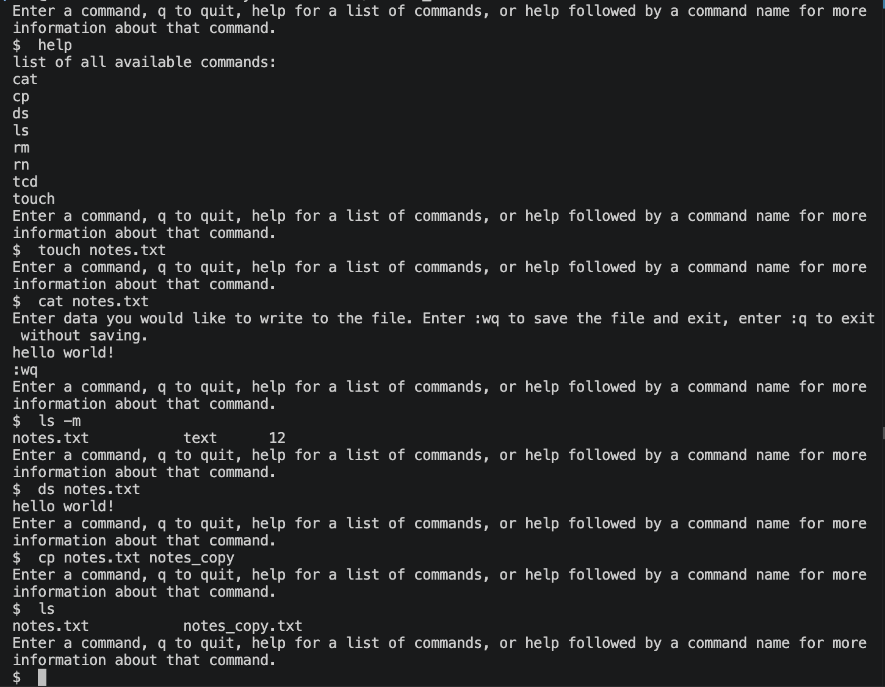

Project 01
MockOS
Modular in-memory file system demonstrating extensible object-oriented software architecture in C++14.
Tech Stack
C++14 · CMake · GoogleTest · CLI
Key Highlights
- Designed an extensible command framework using abstract interfaces
- Applied 7 classic object-oriented design patterns
- Built an in-memory file system supporting multiple file types
- Implemented macro command composition and password-protected files
- Developed comprehensive GoogleTest unit tests